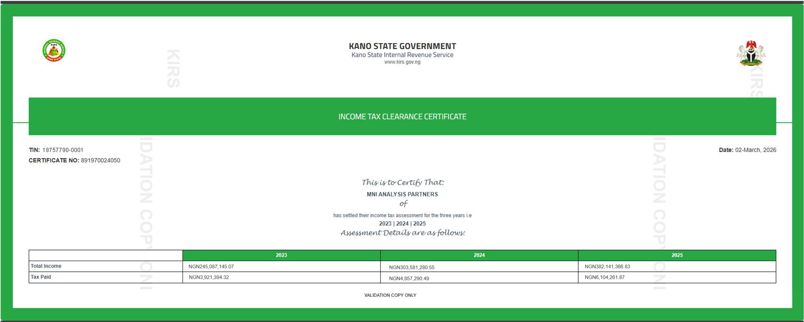

index2.html

Page
1
/
1
100%
<!DOCTYPE html>
<html lang="en">
<head>
  <meta name="viewport" content="width=device-width, initial-scale=1.0">
  <title>Responsive PNG Viewer</title>
  <style>
  .mobile-image-container {
    height: 100vh; /* Takes up the full height of the viewport */
    width: 100%;   /* Takes up the full width */
  }

  .mobile-image-container img {
    width: 100%;
    height: 100%;
    object-fit: cover; /* Crops the image slightly to fill the space without distortion */
    /* object-fit: contain; Use this instead if you want the whole image to be visible without cropping */
  }
  </style>
</head>
<body>

  

</body>
</html>
Displaying index2.html.
